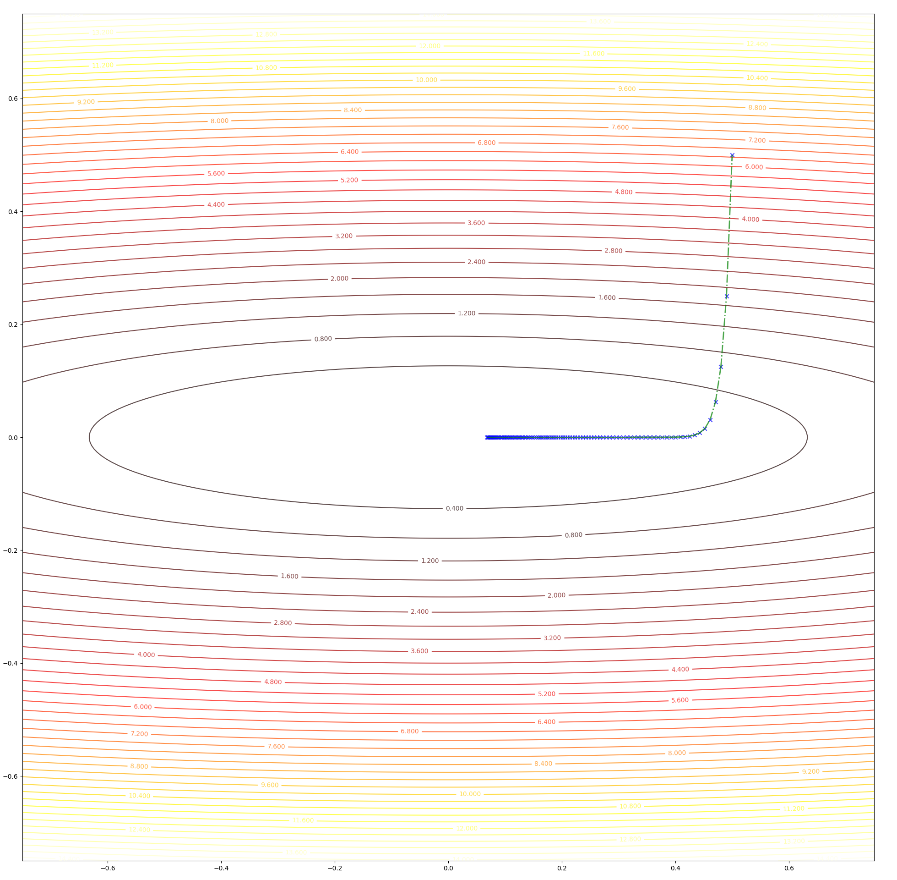
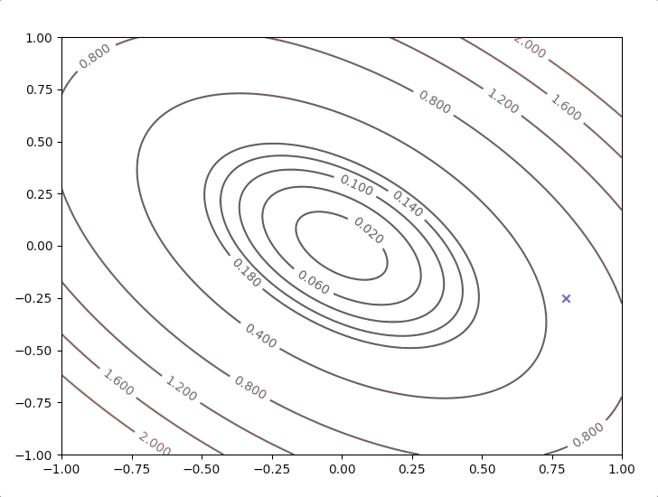

Keywords: steepest descent
Direction Based Algorithm and a Variation
‘An Introduction to Performance Optimization’ had given us a brief introduction to the optimization algorithm. And this post describes a typical direction(pk) based algorithm and its variation gives an algorithm which is a step-length(αk) based algorithm.
Steepest Descent
To find the minimum points of a performance index by an iterative algorithm, we want to decrease the value of performance index step by step which looks like going down from the mountain. And the key point of this algorithm is every step is going down. Every iteration makes the performance index decrease:
F(xk+1)<F(xk)(1)
Our mission is to find the direction pk with a relatively short step length αk which leads us downhill.
The first-order Taylor series of an iterative step is:
F(xk+1)=F(xk+Δxk)≈F(xk)+gTΔxk(2)
where gk is the gradient at position x of the performance index F(x) which means:
gk=∇F(x)∣∣∣∣x=xk(3)
From equation(1) and equation(2) for the purpose F(xk+1)<F(xk), we need:
gTΔxk<0(4)
( Δxk , the change of xk, can also be represented by step length αk and direction p, then the equation(4) has a equivalent form:
αkgTΔpk<0(5)
In the previous article, we have seen how to find the greatest value of gTΔpk then we can find the smallest value of gTΔpk in the same way. Then we got the smallest value this item is:
−gTg(6)
which means that the deepest direction we would search is:
Δpk=−g(7)
According the iterative optimization algorithm frame work’An Introduction to Performance Optimization’, the second step is :
xk+1=xk−αkgk(8)
The step length is also called learning rate. And the choice of αk can be:
- Minimizing F(x) with αk by minimizing along the line: xk−αkgk
- Fixed αk, such as αk=0.002
- Predetermined, like αk=k1
An example:
F(x)=x12+25x22(9)
- start at point x=[0.50.5]
- gradient of F(x) is ∇F(x)=[∂x1∂F∂x2∂F]=[2x150x2]
- g0=∇F(x)∣∣∣∣x=x0=[125]
- set α=0.01
- update: x1=x0−0.01g0=[0.50.5]−0.01[125]=[0.490.25]
- update: x2=x1−0.01g1=[0.490.25]−0.01[0.9812.5]=[0.48020.125]
- go on updating until the smallest point is achieved.
The whole trajectory looks like:

and the learning rate, step length is a constant in this algorithm, however, we can test 2 different values and watch their behavior. When we set α=0.01, we have:

and when we set α=0.02, we have:

The gif illustrates these:
- At first several steps, descent speed is faster than later steps
- A greater learning rate seems to have a higher speed
- This algorithm can converge to the minimum point.
The second point gives us a new idea, what will the algorithms do when we have a relatively bigger learning rate. To be on the safe side we select a not so big learning rate α=0.05, we have:

this algorithm diverges, which means it would never stop at the minimum and get farther and farther as steps going on. So we have to take care of the value of learning rate, a small learning rate can slow down the algorithm but a big one can break up the algorithm.
Stable Learning Rates
To have a fast speed and converge to the minimu, we need to study the learning rate α. To simplify the problem, we start with supposing the performance index is a quadratic funtion:
F(x)=21xTAx+dTx+c(10)
and we have already known its gradient is:
∇F(x)=Ax+d(11)
we take equation(11) into update step equation(8), we have:
xk+1=xk−αgk=xk−α(Axk+d)(12)
or an equivelant form:
xk+1=(I−αA)xk−αd(13)
In the linear algebra course or other courses, this equation is called ‘linear dynamic system’. To make the system stable, the eigenvalues of I−αA are less than one in magnitude. And I−αA has the same eigenvectors with A. Let [λ1,λ2,⋯,λn] be the eigenvalues of A and let [z1,z2,⋯,zn] be the eigenvectors of A
[I−αA]zi=zi−αAzi=zi−αλizi=(1−αλi)zi(14)
I−αA has the same eigenvectors with A and has the eigenvalues: [1−αλ1,1−αλ2,⋯,1−αλn]
Concerning the equation(13) and eigenvalues of I−αA to stabilize the system which here is the steepest descent algorithm, we need:
−1−2∣1−αλi∣<1−αλi<−αλi<1<1<0(15)
for α>0
α2>λi>0(16)
frome equation(16), we finally have
λi2>α(17)
which implies:
λmax2>α(18)
This gives us the maximum stable learning rate is inversely proportional to the maximum curvature(direction along with eigenvector according to the maximum eigenvalue λmax) of the quadratic function.
Let’s go back to the example, the Hessian matrix of the equation(9) is:
A=[20050](19)
its eigenvectors and eigenvalues are:
{λ1=2,z1=[10]},{λ2=50,z2=[01]}(20)
taking λmax=λ2=50 into equation(18), we get:
αmax<502=0.04(21)
so, let’s check the behavior of the algorithm when α=0.039 and α=0.041:
- set α=0.039 we have:

- set α=0.041 we have:

Up to now, both concepts and implement have been built to prove the correctness of the algorithm. And we also have the following tips:
- The algorithm tends to converge most quickly in the direction of the eigenvector corresponding to the largest eigenvalue
- The algorithm tends to converge most slowly in the direction of the eigenvector corresponding to the smallest eigenvalue
- Do not overshoot the minimum point for the too-long step(learning rate α)
- If the distinction between λmin and λmax, the algorithm tends to converge slowly.
Minimizing along a Line
The section above gives us the upper bound of α, but we have three kinds of strategies of selecting a α and the first one is "Minimizing F(x) with αk by minimizing along the line: xk−αkgk". What shall we do with this kind of α?
To arbitrary functions, the stationary point along a direction can be calculated by:
dαkdF(xk+αkpk)=∇F(x)T∣∣∣∣x=xkpk+αkpkT∇F2(x)T∣∣∣∣x=xkpk=0(22)
and then
α=−pkT∇F2(x)∣∣∣∣x=xkpk∇F(x)T∣∣∣∣x=xkpk=−pkTAkpkgkTpk(23)
where: Ak is the Hessian matrix of old guess xk:
Ak=∇2F(x)∣∣∣∣x=xk(24)
Here we look at an example:
F(x)=21xT[2112]x(25)
with the initial guess
x0=[0.8−0.25](26)
the gradient of the function is
∇F(x)=[2x1+x2x1+2x2](27)
the initial direction of the algorithm is
p0=−g0=−∇F(x)∣∣∣∣x=xk=[−1.35−0.3](28)
and take equation(28) and A=[2112]into equation(23):
α0=[1.350.3][2112][1.350.3][1.350.3][2112]=0.413(29)
and take all these data into equation(8):
x1=x0−α0g0=[0.8−0.25]−0.413[1.350.3]=[0.24−0.37](30)
What is going on is repeating the steps: equation(26) to equation(30) until some terminative conditions are achieved. It works like:

All the new directions in the steps are othogonal to their last direction:
pk+1Tpk=gk+1Tpk=0(31)
what we need now is to proof is gk+1Tpk=0, with the chain rule of equation(22):
dαkdF(xk+1)=dαkdF(xk+αkpk)=∇F(x)T∣∣∣∣x=xk+1dαkd(xk+αkpk)=∇F(x)T∣∣∣∣x=xk+1pk=0(32)
equation(32) gives us: a new direction is always orthogonal to the last step direction at the minimum point of the function along the last step direction. This is also an inspiration for another algorithm called conjugate direction.
References